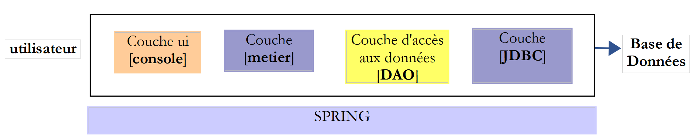
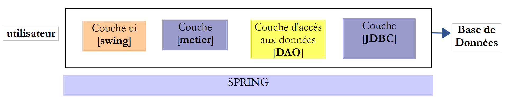
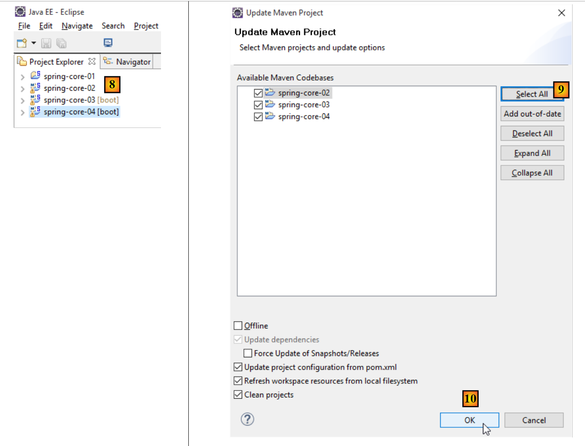

1. Inleiding
1.1. Contexte
De PDF van het document is te vinden |HIER|.
De voorbeelden uit het document zijn beschikbaar |HIER|.
Dit document is zowel een cursus als een TD (begeleide opdracht) voor de universiteit. Het is bedoeld voor beginners. Het maakt gebruik van de volgende bronnen:
Referenties:
We zullen deze bronnen respectievelijk aanduiden als [ref1] en [ref2]. De bron [ref1] is verouderd (2002), maar volstaat voor dit document, waarin deze alleen wordt gebruikt voor de uitleg van de syntaxis van de Java-taal en de basisbewerkingen ervan. De overige informatie die nodig is voor de realisatie van TD wordt in dit document gepresenteerd in hoofdstukken met de titel [Cours]. Deze hoofdstukken zijn rechtstreeks afkomstig uit [ref2] (2015) en zijn hier en daar vereenvoudigd.
Het doel van dit document is om de programmeertaal Java vanuit een professioneel perspectief te onderwijzen. Om deze reden leunen we sterk op het Spring-framework [http://spring.io/], dat veel wordt gebruikt bij de ontwikkeling van JEE (Java Enterprise Edition). Logischerwijs zou deze cursus moeten worden gevolgd door een cursus JEE. Dit is het geval aan de Istia (universiteit van Angers). JEE is momenteel (november 2015) de belangrijkste bron van werkgelegenheid voor jonge ontwikkelaars met een masterdiploma. Er zijn veel andere technologieën dan Spring in de wereld van JEE. Spring heeft het voordeel dat het begrijpelijk is en vooral dat het goede codeerpraktijken biedt die ook buiten het Spring-ecosysteem kunnen worden hergebruikt. Dat verklaart de keuze voor Spring in dit geval.
Dit TD wordt al meer dan 10 jaar gebruikt en is meegegroeid met de technologieën. Het wordt gevolgd (na IstiA) door een TD, JEE en [Een Java EE-webservice bouwen met de NetBeans 6.5 IDE en de GlassFish Java EE-server (2009)]. Deze laatste, TD, dateert uit 2012 (we zijn nu in 2015) en zou wel een opfrisbeurt kunnen gebruiken. Het presenteert de JEE-orthodoxie via het webframework JSF2 (Java Server Faces) en de EJB3 (Enterprise Java Bean). Door deze twee TD'en te combineren, hebben veel studenten een stage JEE bij ESN (digitale dienstverleners) kunnen bemachtigen en zijn ze daar vervolgens in dienst genomen.
In dit document zul je geen formele uiteenzetting van alle facetten van Java aantreffen. In de loop der jaren is de manier waarop juniorontwikkelaars met een probleem omgaan sterk veranderd. Tegenwoordig gebruiken ze vrijwel altijd het internet om stukjes code te vinden die, aan elkaar gekoppeld, een programma vormen. Als ze een cursus krijgen, maken ze daar vrij weinig gebruik van en geven ze er opnieuw de voorkeur aan om op internet te zoeken. Hoewel ik aanvankelijk mijn twijfels had over deze manier van werken, was ik toch verrast door de behaalde resultaten. Zo slaagden zwakkere studenten erin werkende programma’s te produceren, terwijl ze dat zonder de hulp van internet waarschijnlijk niet zouden zijn gelukt. Ik baseer me nu op deze manier van werken.
Stukjes code geven geen totaalbeeld van de architectuur van een oplossing en het is een van de doelstellingen van dit document om dat wel te geven. De studenten maken deze TD net als een TP, zelfstandig. Er is geen hoorcollege. Er is een planning die aangeeft welke voortgang er in de loop van de sessies van hen wordt verwacht. Ze kunnen achterlopen op of voorlopen op deze planning. Hun voortgang wordt gecontroleerd aan de hand van een aantal validaties die ze aan de docent moeten voorleggen. De docent is aanwezig om uitleg te geven wanneer ze daarom vragen en om hun werk te valideren. Iedereen werkt in zijn eigen tempo. Aan het einde van de 36 uur die aan deze TD zijn toegewezen, zullen sommigen 50% meer validaties hebben gedaan dan anderen, maar iedereen zal – dat is in ieder geval het doel – hebben begrepen wat hij of zij zelfstandig heeft gedaan. Deze TD kan zonder begeleiding van een docent worden gedaan. Daarom is hij beschikbaar op [https://tahe.developpez.com].
Dit document is niet geschikt voor wie op zoek is naar een academische cursus over Java, iets waarin Java stapsgewijs en gestructureerd wordt uitgelegd en waarin elk detail van de syntaxis wordt toegelicht en gemotiveerd. Wat hier wordt aangeboden, is eerder een experimentele aanpak. Het is waarschijnlijk dat de student niet alles zal begrijpen wat in het document wordt aangeboden, maar hij zal de inhoud waarschijnlijk wel op de juiste manier kunnen toepassen en het begrip van de details zal met de ervaring komen.
Dit document is evenmin een cursus algoritmiek. Het algoritme van TD is eenvoudig en kan worden opgelost door elke beginner die zijn eerste lessen in algoritmiek volgt. Het document richt zich op de professionele ontwikkelomgeving in Java met zijn talrijke bibliotheken en frameworks, en op de architectuur van de code. De meeste studenten die ik zie, vertonen tekortkomingen op het gebied van algoritmiek, wat vervolgens wordt bevestigd door de stagebegeleiders. Dus ja, het beheersen van algoritmen is belangrijk, maar dat is niet het doel van deze werkcollegecursus.
Ten slotte behandelt dit document (december 2015) niet de nieuwste ontwikkelingen in Java, met name streams en lambda-functies. Toch worden er enkele elementen uit de nieuwste JDK gebruikt, namelijk de JDK 1.8, en de volgende codes moeten met deze JDK worden gecompileerd.
1.2. Contenu
Hoofdstuk 2 behandelt het onderwerp TD, namelijk het berekenen van verkiezingsuitslagen. Het probleem is eenvoudig. In hoofdstuk 2 wordt gevraagd om de oplossing te implementeren in twee talen, C# en Java, die sterk op elkaar lijken. De implementatie gebeurt zonder klassen. Het doel is om de syntaxis van Java, de basisinstructies ervan en de IDE (Integrated Development Environment) Eclipse te presenteren, die wordt gebruikt om Java-projecten te bouwen.
In hoofdstuk 3 wordt gevraagd om de oplossing van TD in Java te implementeren met klassen. Het doel is om de begrippen klassen, overerving, interfaces en generieke klassen te introduceren. Het begrip unit-test JUnit wordt geïntroduceerd.
Hoofdstuk 4 introduceert de concepten die ten grondslag liggen aan de volgende hoofdstukken:
- gelaagde architecturen;
- programmeren via interfaces;
- het gebruik van Spring om de twee voorgaande concepten te implementeren;

Hoofdstuk 5 presenteert het Spring-framework aan de hand van vier projecten.
Hoofdstuk 6 presenteert de API JDBC, een interface voor databasetoegang.
Hoofdstuk 7 implementeert de [DAO]-laag (Data Access Object) van het TD met behulp van het API JDBC en Spring.

Hoofdstuk 8 implementeert de laag [métier] van TD:

Hoofdstuk 9 implementeert de laag [ui] van TD met een console-applicatie:

Hoofdstuk 10 implementeert de laag [ui] van TD met een grafische applicatie die gebruikmaakt van de Swing-componentenbibliotheek:


Hoofdstuk 11 behandelt databasebeheer met het [Spring Data]-framework, een onderdeel van het Spring-ecosysteem. Het introduceert de specificatie JPA (Java Persistence API), waarmee de laag [DAO] objecten kan bewerken in plaats van SQL (Structured Query Language). De gelaagde architectuur ontwikkelt zich als volgt:

Hoofdstuk 12 past hoofdstuk 11 toe door de toegang tot de database van TD te implementeren met [Spring Data].
Hoofdstuk 13 laat zien hoe een database op het web kan worden beschikbaar gemaakt met [Spring MVC], een andere tak van het Spring-ecosysteem. De architectuur evolueert naar een client/server-architectuur:

In hoofdstukken 14 en 15 wordt de applicatie van TD omgezet in een client/server-applicatie:

Hoofdstuk 16 laat zien hoe de toegang tot een webapplicatie kan worden beveiligd met [Spring Security], een andere tak van het Spring-ecosysteem.

Hoofdstuk 17 gaat verder met TD en beveiligt de webservice voor de verkiezingen.
Hoofdstuk 18 behandelt het probleem van cross-domain-verzoeken:
 |
- in [1] levert een webapplicatie HTML / JavaScript-pagina’s;
- in [2] voert de browser de in de pagina’s HTML ingebedde JavaScript uit om de beveiligde webservice [3-4] te raadplegen;
Stel dat D1 = http://machine1:port1 het domein is van de server [1] en D4 = http://machine4:port4 het domein is van de server [4]. Als de servers [1] en [4] niet tot hetzelfde domein [D1!=D4] behoren, dan worden de verzoeken van [3] naar [4] domeinoverschrijdende verzoeken genoemd. Vanwege beveiligingsbeperkingen die door browsers worden toegepast, kan de implementatie hiervan problematisch zijn. We zullen een oplossing bekijken.
In hoofdstuk 19 worden verzoeken tussen domeinen geïmplementeerd met behulp van de verkiezingsapplicatie.
1.3. De gebruikte tools
De volgende voorbeelden zijn getest in de volgende omgeving:
- Windows 10 Pro 64-bits;
- JDK 1.8 (paragraaf 22.1);
- IDE Spring Tool Suite 3.6.3 (paragraaf 1);
- NetBeans 8.1 (paragraaf 22.4);
- Chrome-browser (andere browsers zijn niet gebruikt);
- Chrome-extensie [Advanced Rest Client] (paragraaf 1);
- WampServer, dat de SGBD, MySQL en de tool [PhpMyAdmin] meebrengt om het te beheren (paragraaf 22.7);
Het is belangrijk om JDK 1.8 te gebruiken. In sommige voorbeelden worden elementen van deze JDK gebruikt. De meeste voorbeelden zijn Maven-projecten die zowel met de IDE Eclipse [https://www.eclipse.org/], IntellijIDEA Community Edition, [https://www.jetbrains.com/idea/download/] en NetBeans [https://netbeans.org/]. De schermafbeeldingen hieronder zijn afkomstig uit de IDE Spring Tool Suite, een variant van Eclipse.
1.4. Ondersteuning
De Eclipse-projecten uit dit document zijn beschikbaar op de website [https://tahe.developpez.com/tutoriels-cours/intro-java-spring/serge-tahe-introduction-au-langage-java-et-a-l-ecosysteme-spring/].
 |
Om de projecten van een hoofdstuk te importeren, gaat u in Eclipse te werk zoals aangegeven in [1-8]:
 |
De meeste projecten zijn Maven-projecten. Als er na het laden fouten optreden, voer dan [Alt-F5] uit en volg de procedure in [9-10]. De geselecteerde Maven-projecten worden opnieuw gebouwd.
 |